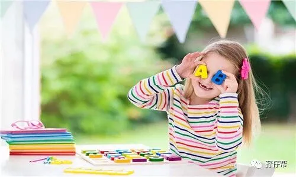
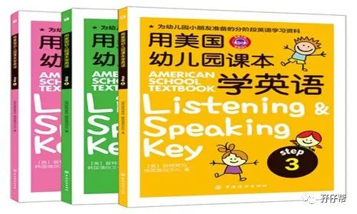
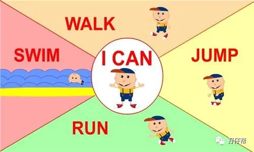
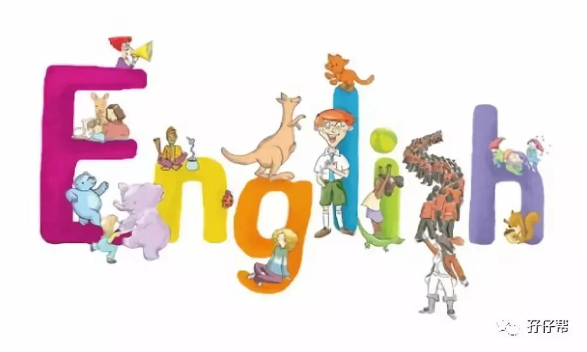
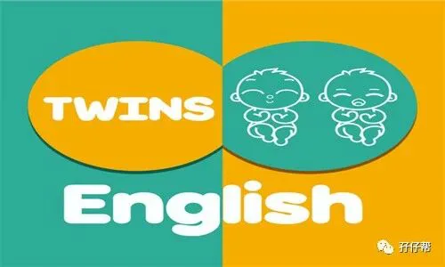

现在的少儿英语培训班，不管是线上还是线下，少则几千多则上万。
对于双胞胎家庭来说，这个“成千上万”还要乘以2，实在压力山大啊。
那么，是否有一个又省钱又能让孩子学到英语的办法呢？
有！在家自己教！
-----孖仔帮
文|圆圈妈 一个文思如尿崩的双胎妈妈
图|来自网络
如果你家双胞胎3岁以上，已入园，正在纠结报读英语兴趣班，可以参考下这篇文章。
以下是我在家教双胞胎男孩学英语的经验，有需要的家长可以参考借鉴哈！
首先有3个问题需要解释下：
1. 为什么要在家教孩子学英语
2. 什么时候开始英语启蒙？
3. 我对孩子们学英语的期望是什么？
＠为什么要在家教孩子学英语
幼儿园的英语培训班很贵，2680元一个学期，每周上四节课，每节课30分钟，师资力量和教学质量一般。
最重要的是，我堂堂一个教师资格证持有者，英语专业，若无用武之地，很浪费哈！
英语作为一门国际语言，会给孩子打开更多扇知识之窗，看到不一样的精彩世界，还是很有必要学的。
＠什么时候开始英语启蒙？
我从来都不认同“小孩子人小啥都不懂”这句话。
有研究称，人的大脑是有关键期可循的，某种知识和行为经验在某一特定的时期最容易获得和形成，过了这个时期，就很难达到最好的水平。
圆圈此刻3岁+，可塑性超强，模仿能力超棒，正是接触新事物的最佳时期。
可能与我本身是学英语专业有关，对于孩子的英语启蒙，我比较积极。
在圆圈还在娘肚子的时候，就给他们听英文歌当胎教，英文版《乘着歌声的翅膀》单曲循环…
在他们对动态画面感兴趣的时候，就给他们看简单有趣的英文动画片，如super simple English，当下流行的儿童动画片，狗狗汪汪队，粉红猪，托马斯…
一律英文版！
因此，当我问他们为什么要学英语的时候，他们的回答是：“为了能看更多托马斯大电影！”
＠我对孩子们学英语的期望是什么？
很简单！
希望通过学习英语让圆圈兄弟的成长世界更开阔些，更趣味些，更特别些…
我始终坚信一点，语言是敞开信息大门的金钥匙。
只有手里拿着钥匙，才有资格进入广阔肥沃的知识海洋，才能用不同的思维方式，真正理解语言背后的奥秘。
这大概也是我当初高考填志愿，经过一番纠结后，最后选择英语专业的终极原因。
鉴于此，我也没指望他们可以说一口贼溜溜的英语。
我只希望在他们进入小学接触正规系统科学的学习模式之前，“学英语”这个概念和习惯能在他们脑海里生根发芽。
把学英语当作跟吃饭喝水一样，是成长必备。
哪怕将来遇到很多学习上的困难，他们都能迎难而上，决不放弃！
而学习英语，养成良好学习习惯就是一个突破口。
这就是我的初衷！唯一的初衷！
OK， 以上三个问题，如果你不能赞同，那真的没有必要往下看了，若你正好跟我有共鸣，欢迎你继续阅读哈！
Ⅰ 学习时间
一周三次课，逢周一，二，四下午4点45分开始，每次课持续时间30分钟，刚开始15分钟，看他们的接受能力，慢慢增加到20分钟，30分钟。
Ⅱ 教材选择
我选了一套全英文的英语教材《用美国幼儿园课本学英语》，紧紧因为里面一句话“Simply Learning，Simply Best”意思是简单学习，就是最好。
这是我非常认可的学习理念。
这是专为幼儿园小朋友准备的分阶段英语学习教材，全英文，分上中下三册，学习难度逐一增加，有配图和音频。
教材的学习计划比较系统，知识点归纳分类也比较科学，我不用备课，跟着教材的学习任务即可。
但缺点就是，对于三岁小孩子，阶段1依然有点难度，需要根据孩子的接受能力针对性教学，而且没有视频，这是最大的硬伤，只能在网上找跟教材相关的教学视频。
Ⅲ 教学方法
☆☆鼓励说出来
教材里有插图， 先让他们用中文简单描述出图片内容，不管说的好不好，都给他们点赞。
趁着他们受到鼓励正享受着被人夸奖的滋味时，扔给他们问题：“那用英语怎么说？”。
他们会为了得到更多的表扬，更加积极地思考：“对哦，这个用英语怎么说呢？”
这个时候，赶紧趁热打铁，告诉他们该用英语怎么读…
☆☆引入短视频
很多时候，对于三岁大的孩子来说，跟读是非常被动的，还要辅助一些趣味性的教学。
比如这个章节的单词是长颈鹿和河马，那就播放一些有关动物的英文短视频给他们看，时间控制在3分钟左右。
☆☆适当提问题
看完之后提问“在视频上看到哪些小动物了？有什么？有….”
起初他们不会回答，那就先自问自答，让他们跟着你一起回忆，然后跟读几遍。
为了让他们积极地参与问答环节，可以适当诱惑他们，如答对问题可以再看一遍短视频或者奖励小红花等...
正确使用视频教学会收到事半功倍的效果，好过我逼着他们跟我一起读几十遍，不如他们情不自禁跟着视频读一边。
☆☆来点小游戏
除了辅助视频，还可以穿插一些小游戏。
比如教材要求用英语表达跳，跑，唱，走这些动作时。
先教他们读几遍，接着开始做游戏，让其中一人走，让另一人用英语表达出“走”的动作，或者我做动作，让他们抢答。
看谁可以先答对，答对之后，给予奖励。
Ⅳ 我在教学过程中遇到的问题
√坐不住
你看我现在写总结的时候，好像挺轻松的，其实刚开始很艰难，完全处于失控状态。
他们总是坐不住，一会说要去尿尿，一会儿说想喝水，一会儿就是看着边上的玩具发呆…
我尝试过很多方法引导他们都不奏效，时常忍不住发火，生气，还很丧气不想继续教了…
还好，这种注意力不集中的现象只是持续了两个星期，他们慢慢地进入了状态。
其实才三岁多的孩子，他们的专注力毕竟有限，能跟着你的思路坐上8分钟，已经相当不容易了。
因此，作为引路人，贵在坚持哦！
√难度较大
教材的部分知识点难度较大，特别是语法部分。
我觉得太超前了，毕竟用的是老外编写的教材，国情不一样。
因此，我只能根据他们的接受能力，有的放矢。
个人建议，对于刚接触英语的儿童，不要有太多要求。
抛开语法句子，学会一些短语，会说一点短句子，知道生活中的一些日常用语和词汇，已经相当不错了。
除非你的孩子，打算出国的，那就另当别论哈！
Ⅴ 辅助教材学英语的其他途径
☞☞一起读绘本
中文绘本《就快了》，这本书里面提到了很多小动物，正好当天教材中有学到这些词汇，我会在读绘本时顺便提问题，他们一般都会回答我。
有时候还会发散思维地问：“那其他动物用英语怎么说？”
但有时候他们会很反感我这样中途打断：“妈妈，快讲书，不要学英语”
哎，氛围和习惯还是挺重要的！
☞☞一起唱英文儿歌
抛开课堂上的拘谨严肃，寓教于乐，让孩子在玩乐中学习，有时候还是挺管用的。
圆圈兄弟很喜欢唱《make a circle》，每次唱就会要求我们跟他们手牵手围着一个圈，转啊转。
从这首歌当中，他们很早就学会了up上，down下，big大，small 小…
这得益于唱这首歌的同时，辅助了动作和游戏，让他们玩乐的同时又记住了里面的几个动作，明白那些动作的意思。
☞☞一起读英文故事
圆圈兄弟三岁，开始看全英文绘本，是那种稍微有点简单故事情节的英文故事书。
他们自然是看不懂英语，但我的用意并不是这个，而是让他们知道英语长什么样子，不是象形字，方块字，而是几个字母组合的。
我仅仅是希望他们有这样一个意识：这个世界上有英语，英语是由26个字母组合的，学英语有好处。
当他们对里面的插图很感兴趣，要我解释时，我就说那是英语，只能跟着我一起读，才能知道讲什么。
他们跟着我一起念长句子英文时，总是有上句没下句，但却觉得非常有趣。
有时候他们没有跟上我的节奏，会反复地读上几遍。
非常让我骄傲的是，圆圈的英语发音很标准，音标/θ/，他们看着我嘴巴发音，就能模仿地超级像。
不得不佩服他们这个年龄阶段，真是学啥像啥的黄金阶段，所以更加应该抓紧这个时机引领他们上道。
总结
家长在家教和老师课堂上教毕竟不大一样，很明显的区别就是学习氛围。
但总有很多理由让你不得不对双胞胎孩子在英语启蒙这件事情上，来点不一样的套路！
如果家长英语口语好，不报班的话，让两孩子从小就在家里用英语对话，亲子阅读，唱歌，做游戏，然后等他们稍大一点后，自己找一本教材启蒙，其实也是个不错的选择哈！
因为即便把孩子丢进英语培训班，我们做家长的依然需要投入大量时间精力陪着练习巩固，不然效果也会事倍功半！
目前我已经坚持了一个学期，完成了第一册的教学，效果还是不错的哈。
他们对一些常见物品和常用短语掌握得比较好，还能不经意间冒出几个单词，外出看见新事物会问：“那个东西用英语怎么说？”，有时候中文忘记怎么说，就直接飚英文了....
嗯！与之共勉，继续努力，期待孩子们的更多惊喜！
有时间在家对双胞胎孩子启蒙英语的家长一起来双胞胎教育群交流探讨吧！
-END-
重磅互动
#你希望写什么育儿经验干货？#
评论区聊一聊
随便提，万一下篇就写了呢？
关于这个号
谢谢关注！
我是圆圈妈
85后，全职妈妈
家有孖仔两枚，圆圈&圈圈
双胞胎育儿公众号：孖仔帮
ID:twinsbang
旨意分享双胞胎孕育心得帮助双胞胎家庭
有经验可循
有组织可靠
希望我的经验对您有所启发
期待与您一起共享双胞胎育儿经
孖仔帮目前有5个双胞胎微信社群
孕期群，喂养群，闲置群
爸爸群，教育群
如需入交流群
添加微信号sgguy-com
或扫描下方二维码⬇⬇
申请入群
入群暗号：双胎宝妈/宝爸，孕期/已生
往期回顾
105：同卵双胞胎的天敌--双胞胎输血综合征
106：官宣：双绒双羊，单绒双羊，单绒单羊傻傻分不清？一篇消除你所有疑问
215：双胎子宫日记系列|（下）你看不看？双胞胎妈妈直播剖腹产全过程
306：真人示范！双胞胎妈妈高难度喂母乳技巧
312：为出生就进NICU的双胞胎新生儿，我必须告诉你这5个通关秘籍
407：嘿！双胞胎孩子的亲子阅读攻略，要来一份吗（1--2岁阶段）
605：看过这份最简单的双胞胎宝宝用品囤货清单，其他的都是将就
608：听说...你在找双胞胎育儿神器，这事儿我熟！
723：双胎妈妈，为什么我不建议你这样坐月子...
⬇⬇长按下方二维码，关注孖仔帮
回复文章编号数字即可阅读
更多养育双胞胎知识，尽在双胞胎育儿网站
请猛戳 "阅读原文"
或长按下方二维码直达⬇⬇
喜欢记得来一个






